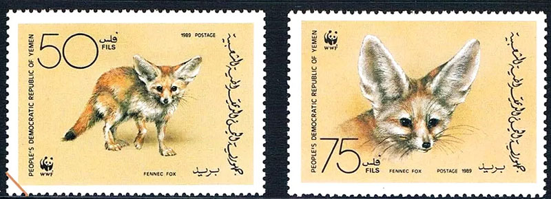
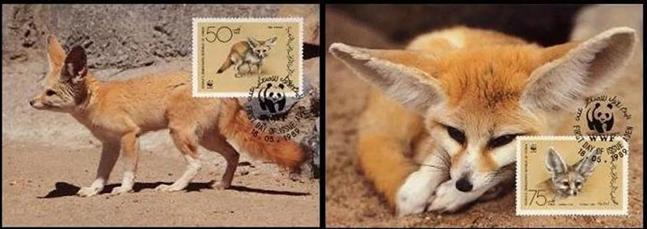
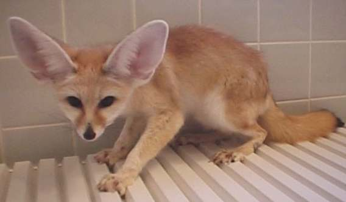

|
Fennec or Fennec Fox is the common name for a small canine of the deserts of northern Africa.  Unfortunately it is less know, that's why it will presented on this page in its full splendor.  This small mammal has a body about 35.7 to 40.7 cm (14.1 to 16.0 in) long; the bushy tail is about 17.8 to 30.5 cm (7 to 12 in) long.
The fennec is pale brown to almost white and closely resembles its relative, the fox, except for the erect ears, each of which is as large as the face.
The fennec can dig with great speed, and when pursued it seems almost to dive into the sand.
Its burrow is lined with a collection of soft material, such as bits of fur and feathers. The fennec usually sleeps during the day, coming out at night to seek its prey. It feeds mainly on mice, small birds, lizards, and insects, and sometimes supplements this diet with fruit.
The fennec sometimes drinks at water holes, although studies suggest that it need not do so.  The ability of fennecs to go without water for indefinite periods of time is an adaptation to their desert habitat. In this they are related to stamp collectors, who have to wait long years till getting the stamps of their dreams.
Scientific classification: The fennec belongs to the family Canidae. It is classified as Fennecus zerda (sometimes as Vulpes zerda). (Source: Microsoft Encarta 96). Credits: Many thanks to SNA Postmaster General Blair Stannard for most of the above images. Shiori's Fennec named Koeda
I have a fennec fox named Koeda, which means twiggy in Japanese.
Thanks a lot, Shiori, for sharing her images with us.
|